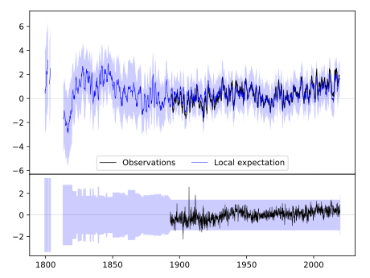
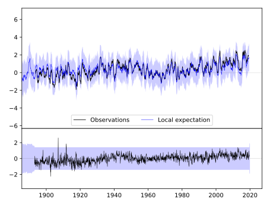
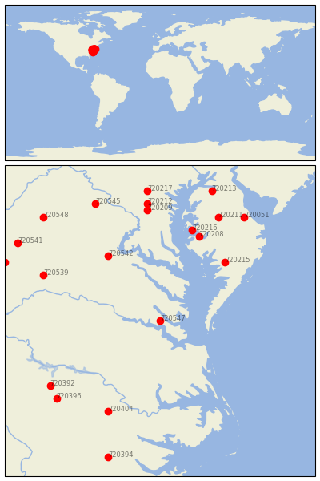

WILLIAMSBURG 2 N [USA]


| Neighbour | Name | Country | Distance | Lon/Lat | Years |
|---|
| 720547 | WILLIAMSBURG 2 N | USA | 0 | -76.7, 37.3 | 1893-2019 |
| 720542 | FREDERICKSBURG NP | USA | 131 | -77.5, 38.3 | 1893-2019 |
| 720215 | PRINCESS ANNE | USA | 133 | -75.7, 38.2 | 1823-2019 |
| 720208 | CAMBRIDGE WATER TRMT | USA | 153 | -76.1, 38.6 | 1893-2019 |
| 720216 | ROYAL OAK 2 SSW | USA | 161 | -76.2, 38.7 | 1891-2019 |
| 720404 | TARBORO 1 S | USA | 171 | -77.5, 35.9 | 1871-2019 |
| 720539 | CHARLOTTESVILLE 2W | USA | 176 | -78.5, 38.0 | 1837-2019 |
| 720392 | HENDERSON 2 NNW | USA | 187 | -78.4, 36.3 | 1892-2019 |
| 720209 | BELTSVILLE | USA | 189 | -76.9, 39.0 | 1893-2019 |
| 720211 | DENTON 2 E | USA | 194 | -75.8, 38.9 | 1892-2019 |
| 720396 | LOUISBURG | USA | 195 | -78.3, 36.1 | 1891-2019 |
| 720212 | LAUREL 3 W | USA | 200 | -76.9, 39.1 | 1893-2019 |
| 720051 | MILFORD 2 SE | USA | 211 | -75.4, 38.9 | 1893-2019 |
| 720545 | LINCOLN | USA | 218 | -77.7, 39.1 | 1893-2019 |
| 720217 | WOODSTOCK | USA | 223 | -76.9, 39.3 | 1870-2019 |
| 720213 | MILLINGTON 1 SE | USA | 233 | -75.9, 39.3 | 1893-2019 |
| 720546 | STAUNTON WATER TRMTM | USA | 233 | -79.1, 38.2 | 1893-2019 |
| 720541 | DALE ENTERPRISE | USA | 234 | -78.9, 38.5 | 1893-2019 |
| 720548 | WOODSTOCK 2 NE | USA | 237 | -78.5, 38.9 | 1893-2019 |
| 720394 | KINSTON 7 SE | USA | 244 | -77.5, 35.2 | 1883-2019 |